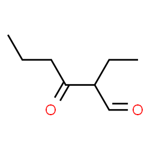

N omenclature
The Process

In general, aldehydes and ketone compounds follow the same IUPAC rules discussed in the first alkanes portion of the portfolio. For aldehydes, "-al" replaces the suffix of the IUPAC name (where the alkane/alkyne/alkene named after the longest carbon chain is the prefix), while in a ketone the suffix is "-one". For example: Propanone and Hexenal. This is, of course, if the carbonyl group is in the longest carbon chain. If it is not, and it is instead a side chain, it will be placed before the base and named similar to how other IUPAC side chains are named (with the location of the side chain placed before the its name). If a carbonyl group is a side chain AND there is a carbonyl group at the end of the main chain, it is given the name oxo. If there are more than one carbonyl groups on the main carbon chain and at least one sits on the end of the chain, with another carbonyl group sitting somewhere in the middle of the chain, the molecule will be named as an aldehyde with these oxo names being used for the carbonyl groups. (Note: If there is two carbonyl groups and they are both at the the other ends of the molecule, it is still named as a ketone it can be named using the "di" before the "-al" instead of listing an oxo group. Along with this, the di,tri,etc. naming is only used if there is no end carbonyl groups [on ketones]).
...-(# off the main chain)-(main chain carbon # prefix)(# of carbons in side chain prefix)yl(# of carbons in main chain prefix)(one/al)
...-2-ethylhexanal
3-hexanone
2-oxopropanal
2,4-pentanedione (the di, tri, etc. naming is still used for aldehydes/ketones)
2-ethyl-3-oxohexanal
B ack